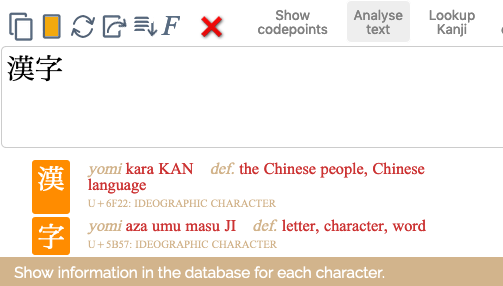
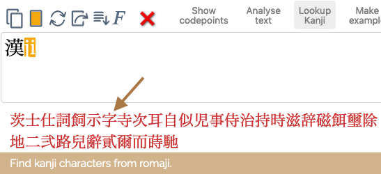
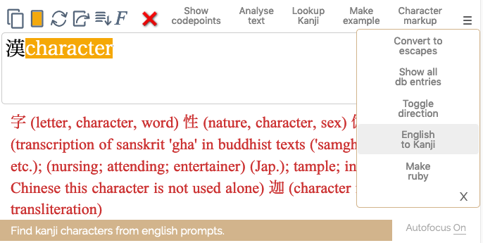

Japanese character app notes/help
Updated
14 November, 2020
This Unicode character app allows you to produce or analyse runs of Japanese text using the Simplified and Traditional Japanese orthographies. Character apps are especially useful for people who don't know a script well, as characters are displayed in ways that aid identification.
If something is broken or missing raise an issue. For release notes see the Github commit list.
Inputting characters
The app includes support for around 3,000 common kanji characters. These include the jōyō kanji set (as well as the kyūjitai shapes reflecting earlier usage), the jinmeiyō set and its variants, and several additional characters.
To analyse text, copy & paste it into the large text area and select the desired control(s). The app is particularly useful for analysing text. You can get information about kanji characters using the Analyse text feature. Identifying most characters used for everyday Japanese, it produces ON and kun transcriptions and definitions for common kanji characters.

To produce Japanese text in the text area, do one or more of the following:
- Type on your keyboard, with help from type-assist. This character app doesn't provide an in-built IME, so you will need to use the one provided by your system. However, type-assist does allow easy input of kana, fullwidth alphanumerics, and punctuation, and there are ways to find kanji characters. For example, typing k with type-assist turned on gives access to all the kana syllables beginning with k. For the katakana equivalents, type uppercase, ie. K.
- Find a kanji character to add to the text by typing the ON or kun yomi equivalent in Latin characters, then use Lookup Kanji. This, along with a shortcut alternative approach, is described in more detail below. You can also look up kanji using keywords in the definition, with the English to Kanji feature.
- Click on the punctuation characters in the selection area.
More detail is provided further down this page.
Lookup Kanji. Allows you to look up kanji characters with a given pronunciation.

- Type the pronunciation in romaji.
- Highlight the syllable you want to look up (only one syllable at a time), and click on Lookup Kanji. Matching kanji characters will appear below the text area. Note that, unlike Chinese, there are usually a large number of results for Japanese.
-
Copy the desired character in place of the highlighted pinyin text. You can do this by copy-pasting, or by using the ^ control to the right of the alternatives and deleting what you don't need.
Alternatively, as a keyboard shortcut, you could hit the § key and the pinyin text will be replaced by the matching hanzi characters, surrounded by slashes (to keep them distinct from any other hanzi on the line). You can then remove the text you don't want to keep.
Vocab to markup. Converts a vocab entry to markup that can be used for an example. Must be applied to one line at a time.
មេឃ|sky|meːk
will produce:
<span class="charExample" translate="no"><bdi class="ex" lang="km" dir="ltr">មេឃ</bdi> <bdi class="trans">m̱eḵʰ</bdi> <bdi class="ipa">meːk</bdi> <bdi class="meaning">sky</bdi></span>
English to Kanji. Allows you to look up kanji characters by typing keywords used in the definitions.

Type one or more words in English, highlight it, and select English to Kanji from the pulldown menu. Matching kanji characters, with their definitions, will be displayed below the text area.
Toggle direction. Switches the writing mode of the text area between horizontal and vertical.
Make ruby. This feature speeds up the creation of HTML markup for ruby. Simply type the base character(s) followed by a slash and the ruby annotation, then select Make ruby. The markup will appear below.

As shown just above, you can add a sequence of base-annotation pairs, and they will be surrounded by a single <ruby> tag.